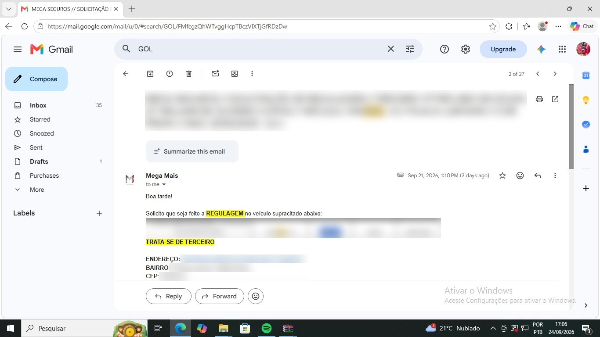
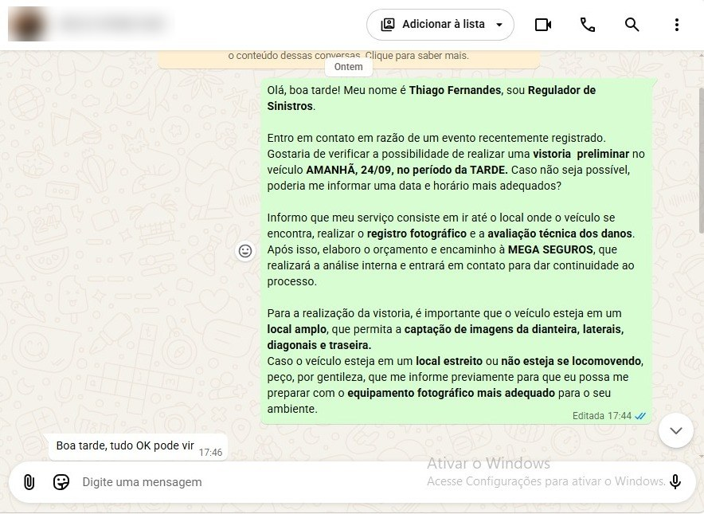
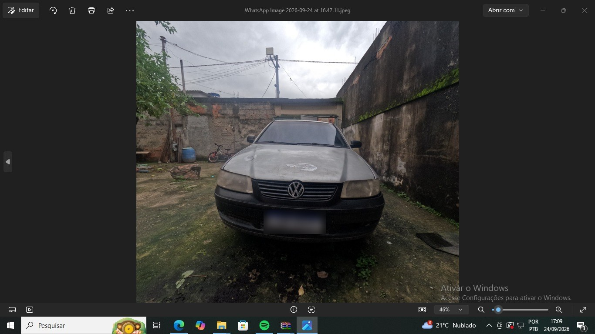
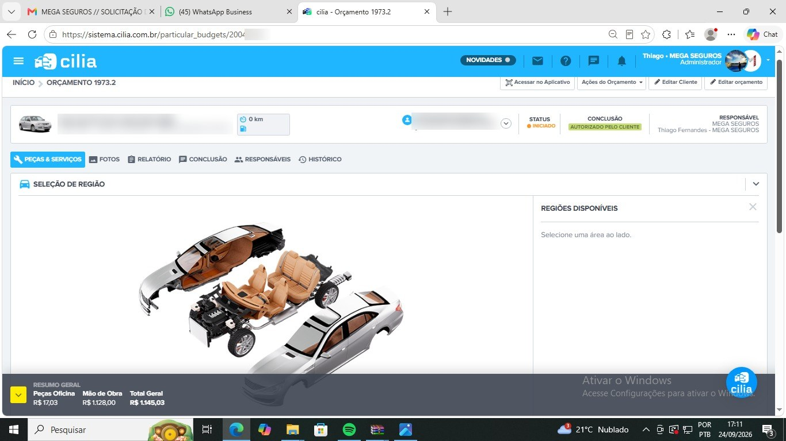
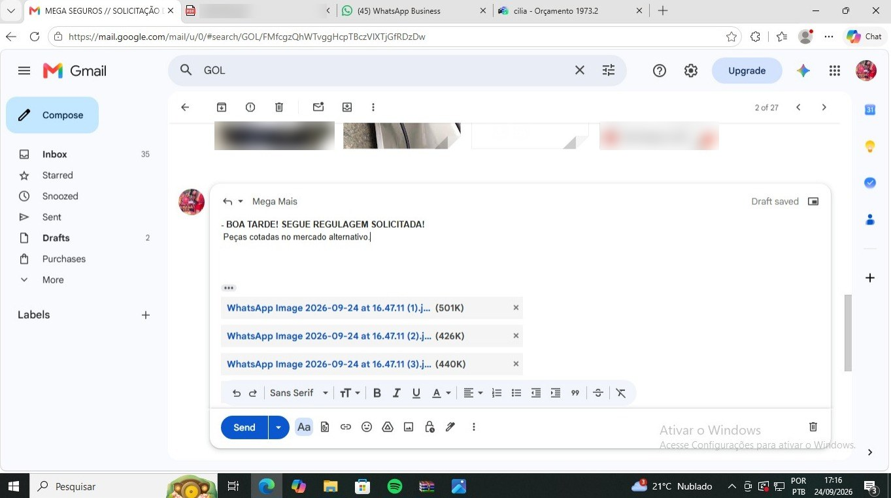

Cartilha de Regulagem
Regulagem de sinistros — da solicitação recebida por e-mail até o envio do orçamento. Guia interno de procedimentos Mega Seguros.
Solicitação e Vistoria
Do recebimento do pedido de regulagem até a vistoria do veículo.
Recebemos a Solicitação de Regulagem
O processo começa quando chega, por e-mail, a solicitação de regulagem enviada pela Mega Mais.
Padrão do assunto do e-mail
O que vem no corpo do e-mail
- 1 Pedido de regulagem: "Solicito que seja feito a REGULAGEM no veículo supracitado abaixo"
- 2 Tabela com nome, veículo, placa, cor e ano
- 3 Destaque indicando se trata-se de terceiro
- 4 Endereço, bairro e CEP de onde o veículo se encontra

A regulagem começa com o e-mail de solicitação da Mega Mais. O assunto já traz terceiro, associado, veículo, placa, cor e ano, e o corpo traz a tabela com os dados do veículo e o endereço onde ele se encontra.
Contato com o Segurado para Agendar a Visita
Com a solicitação em mãos, o regulador entra em contato com o segurado pelo WhatsApp para agendar a vistoria.
Mensagem padrão
Entro em contato em razão de um evento recentemente registrado. Gostaria de verificar a possibilidade de realizar uma vistoria preliminar no veículo [DIA], [DATA], no período da [MANHÃ/TARDE]. Caso não seja possível, poderia me informar uma data e horário mais adequados?
Informo que meu serviço consiste em ir até o local onde o veículo se encontra, realizar o registro fotográfico e a avaliação técnica dos danos. Após isso, elaboro o orçamento e encaminho à MEGA SEGUROS, que realizará a análise interna e entrará em contato para dar continuidade ao processo.
Para a realização da vistoria, é importante que o veículo esteja em um local amplo, que permita a captação de imagens da dianteira, laterais, diagonais e traseira.
Caso o veículo esteja em um local estreito ou não esteja se locomovendo, peço, por gentileza, que me informe previamente para que eu possa me preparar com o equipamento fotográfico mais adequado para o seu ambiente.
O que a mensagem deixa claro para o segurado
- 1 Quem está entrando em contato e por quê (evento registrado)
- 2 Data e período sugeridos para a vistoria, com abertura para outra data e horário
- 3 O que acontece na visita: registro fotográfico e avaliação técnica dos danos
- 4 O que acontece depois: orçamento encaminhado à MEGA SEGUROS, que dá continuidade ao processo
- 5 O veículo precisa estar em local amplo, para fotos da dianteira, laterais, diagonais e traseira
- 6 Se o local for estreito ou o veículo não se locomover, avisar antes

O agendamento é feito pelo WhatsApp com a mensagem padrão, que apresenta o regulador, sugere data e período, explica o serviço e orienta sobre o local do veículo. Ajustar a data a cada caso e aguardar a confirmação do segurado.
Após a Visita: Fotos no Computador
Depois da vistoria, as fotos do veículo são passadas para o computador.

Terminada a vistoria, as fotos vão para o computador. Os danos analisados ficam anotados no caderno e servem de base para o orçamento.
Orçamento e Retorno
Montagem do orçamento no Cília e resposta à solicitação.
Elaboração do Orçamento pelo Sistema Cília
Com as fotos e as anotações do caderno, o orçamento é elaborado no sistema Cília.
Cabeçalho do orçamento
| Campo | O que mostra |
|---|---|
| Veículo | Modelo, placa, cor e chassi |
| Cliente | Nome do terceiro e, entre parênteses, o associado |
| Status | Ex.: Iniciado |
| Conclusão | Ex.: Autorizado pelo cliente |
| Responsável | MEGA SEGUROS / regulador responsável |
Abas do orçamento
- ● Peças & Serviços
- ● Fotos
- ● Relatório
- ● Conclusão
- ● Responsáveis
- ● Histórico
Lançamento das peças e serviços
- 1 Na aba Peças & Serviços, usar a Seleção de Região: clicar na área do veículo para lançar as peças e serviços daquela região
- 2 Conferir o Resumo Geral na parte de baixo da tela: Peças Oficina, Mão de Obra e Total Geral

O orçamento é montado no Cília a partir das fotos e das anotações da vistoria. As peças e serviços são lançados pela Seleção de Região, e o Resumo Geral mostra peças, mão de obra e total.
Responder o E-mail de Solicitação
Após finalizar o orçamento, a resposta é enviada no mesmo e-mail da solicitação recebido da Mega Mais (item 01).
Texto de resposta (exemplo)
Peças cotadas no mercado alternativo.
Passo a passo
- 1 Abrir o e-mail de solicitação da Mega Mais e clicar em Responder
- 2 Escrever o texto de resposta
- 3 Anexar as fotos da vistoria
- 4 Enviar

Com o orçamento pronto, responder o próprio e-mail de solicitação da Mega Mais informando que segue a regulagem solicitada, com as fotos da vistoria em anexo.